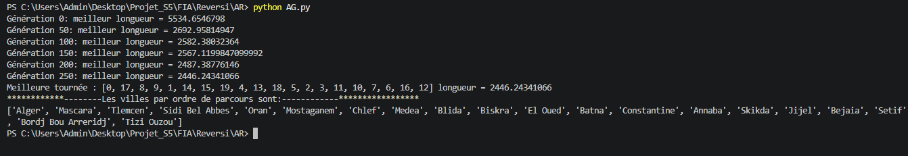

01
Hill Climbing
Amélioration progressive d'une solution en explorant son voisinage.
Optimisation algorithmique
Étude et implémentation de plusieurs stratégies de recherche pour résoudre un problème d'optimisation combinatoire.

Le problème du voyageur de commerce consiste à déterminer une tournée permettant de visiter un ensemble de villes tout en minimisant la distance totale parcourue.
Le problème
Le nombre de solutions possibles augmente très rapidement avec le nombre de villes. Une recherche exhaustive devient donc rapidement coûteuse.
Le projet consiste à étudier différentes stratégies capables d'explorer efficacement l'espace des solutions afin de trouver de bonnes solutions dans un temps raisonnable.
Méthodes étudiées
Amélioration progressive d'une solution en explorant son voisinage.
Évolution d'une population de solutions à travers sélection, croisement et mutation.
Exploration de nouvelles solutions en évitant temporairement certaines configurations déjà visitées.
Exploration ciblée du voisinage d'une solution courante.
Génération et comparaison de différentes solutions candidates.
Acceptation contrôlée de solutions moins bonnes afin d'éviter certains minima locaux.
Bilan
Comparer les solutions obtenues selon leur coût total.
Observer le compromis entre qualité et temps de calcul.
Comprendre les mécanismes permettant d'explorer un espace de solutions complexe.
Étudier les avantages et limites de différentes stratégies heuristiques.
Projet suivant
Découvrez un autre projet consacré aux algorithmes d'intelligence artificielle.